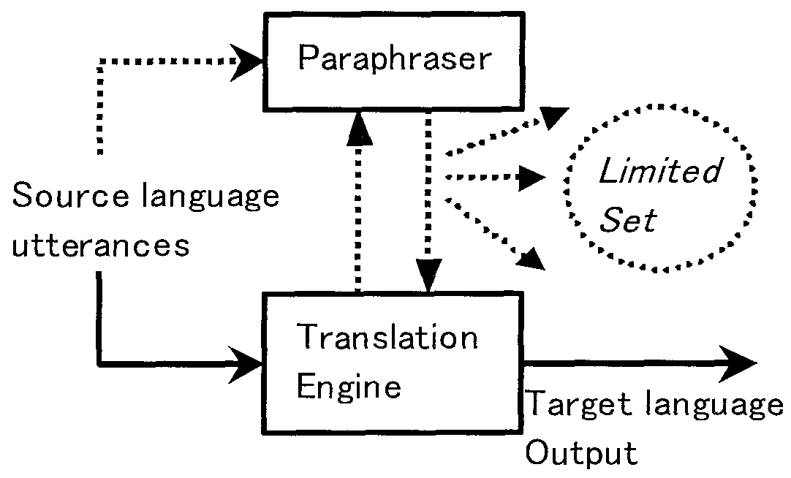

在口语自动翻译系统中，当翻译引擎无法对输入语句(utterance)迸行正确理解和翻译时， 如果系统能够自动提供输入语句其它可能的表达方式，无疑将提高系统翻译的正确率。 本文介绍汉语口语为源语言输入的汉-外口语自动翻译系统中，汉语口语语句自动改写方法研究的基本思想和初步成果。 本文中作者提出了基于口语解析技术和语言自动生成技术相结合的汉语口语自动改写方法。 该方法的基本思想是，首先利用口语自动解析技术提取输入语句的主要特征，包括语句类型，时态，句法成分等， 并对复杂长句进行自动识别和切分，然后，根据解析结果利用语言生成技术实现输入语句的自动改写。
语句改写，口语自动翻译，口语解析
| 1 问题背景 | |
| 2 相关工作 | |
| 3 问题分析与方法探讨 | |
| 4 基于特征提取的汉语口语语句改写方法 | |
| 4.1 复杂长句切分 | |
| 4.2 数词和时间词Chunk的预处理 | |
| 4.3 其它Chunk的Parsing分析 | |
| 4.4 依存关系分析 | |
| 4.5 框架表示 | |
| 4.6 语句改写生成 | |
| 5 试验结果 | |
| 6 结语与下一步的工作 | |
| 致谢 | |
| 参考文献 |
由于自然口语本身的灵活性和多变性，以及语音识别技术可能产生错误的识别结果和一些基本口语信息（如停顿、语气等）丢失等因素， 使得口语自动翻译研究面临许多困难[16]。 在过去十几年的口语自动翻译研究中， 人们提出了很多方法来提高自然口语解析器的鲁棒性(robustness)和翻译正确率[2,10]， 然而，目前的口语自动翻译技术仍然面临许多问题，如何处理复杂的口语句子，正确翻译和表达说话者的意图， 仍然是目前口语翻译研究中需要解决的关键问题之一。
在研究口语翻译策略时，一种基本的思想是借鉴和模拟人在进行口语翻译时的基本模式。 当说话者说出一句话的时候，充当翻译的人如果不能理解说话者的意图， 那么他需要询问说话者，在这种情况下说话者很可能会给出不同于原来句子的另外一种表达形式， 要么替换刚才说出的话中比较生僻的词语，要么变换句子结构或者进行意思解释。 这个过程实际上是由说话者自己完成了一个句子改写（说）的过程。 这样，我们很自然地想到，如果在口语翻译系统中，当翻译引擎不能实现输入句子的正确翻译时， 如果系统的源语言预处理模块能够自己实现输入句子的自动改写，并不断为翻译引擎提供另外可能的表达形式， 对于提高翻译结果的正确率无疑是十分有意义的。 从另一个角度来讲，由于翻译模块能够处理的语言现象往往是有限的，如果系统源语言预处理模块能够生成输入语句的其它多种表达形式， 那么这些表达形式中只要有一个落入到系统可以处理的有限的句型集之内，系统就可以得到原输入语句的正确翻译结果。 因此，基于这种考虑，日本ATR-SLT(Advanced Telcommunications Research Laboratories International, Spoken Language Translation Laboratories)的Yamamoto等提出了一种基于输入语句改写的口语翻译模型， 称之为Sandglass翻译模型[12]。 这种翻译模式的直接效果是把复杂的源语言解析任务从翻译模块中分离出来，让源语言本身来表达输入语句的含义， 翻译模块可以采用简单的转换方法实现有限集内源语言到目标语言的翻译转换。 其基本思想如下图所示：
|
 |
本文所要介绍的工作就是在上述背景下对汉日口语自动翻译系统中汉语口语语句改写任务的研究情况。 论文第二部分简要介绍语句改写技术研究的相关工作； 第三部首先分析改写方法研究中的主要问题和我们的对策， 然后详细介绍我们提出的基于特征提取的汉语口语自动改写方法的基本思想和实现技术； 第四部分给出部分试验结果；第五部分是本文的结束语。
但讲语句改写方法研究，也许并不是什么全新的课题。 早在1983年Mckeown等人就提出了利用语句改写技术对问答系统(CO-OP)的输入句子进行简化改写的思想[7]。 然而，当时的方法仅限于规范句法结构的输入句子。 1996年Chandrasekar等人提出了利用有限状态文法FSG(Finite State Grammar)简化长的复杂句子的基本方法。 该方法利用标点符号和关系代词等定义一组规则和模板来简化复杂长句[3]。 而在口语处理中不可能有任何标点符号可以利用。 Dras等提出了利用同步树联结文法TAG(Tree-Adjoining Grammars)改写句子的方法[4,5]。 该方法不仅依赖于理想化的TAG文法，而且要求对输入句子进行很好的句法分析。 这在口语处理系统中几乎很难做得到。 Boguslavsky研究过基于词汇功能的俄语和英语同义词改写系统[1]， 通过同义词替换改写输入句子，但是，并没有涉及到句子结构改写。 Sato和Kondo等分别研究过日语科技论文标题和日语句子的改写方法[11,6]， 其主要目的是为了科技论文检索的需要。 其研究方法是针对日文科技论文标题中多含有复杂名词短语，而且这些名词短语在语义上往往具有动词作用的特点， 主要利用句法转换规则来分析复杂名词短语的内部结构并对其扩展，以获得与原标题具有相同意思的不同表达。 Meteer研究过自然语言接口系统中的句子改写方法[8], Ramsay介绍了英语句子中非常规词序的短语的识别和处理方法[9]。 从目前句子改写方法研究的现状来看，一般都是针对文本输入进行的，一方面与口语句子相比，文本句子本来就相对规范。 另一方面，文本句子中有很多可以利用的分析信息，如句子标点等。 而口语句子无论在词序，句子结构和用词方法等很多方面，都有较大的灵活性。 而且口语处理中没有标点符号等信息可以利用。 令人遗憾的是，在我们开始汉语口语句子改写方法研究之前，没有找到任何有关中文句子改写方法研究的论文。
从问题研究的内容和处理手段来看，句子改写本身在本质上也许并不是什么全新的课题， 它涉及的问题同其它目的的任何一个自然语言处理系统一样，几乎触及到了分词（对于汉语和日语等而言）、 句法分析甚至语义分析、语言生成等各个方面。 但是，从对整个处理系统的作用来说，无论是口语翻译系统，人机对话系统， 还是文摘抽取和生成等自然语言处理系统，其重要意义是不言而喻的。
作者认为，句子改写首先应该满足三个基本条件：
| ◇ | 改写前后的句子使用同一种语言； | ||
| ◇ | 改写前后的句子具有相同的语义； | ||
| ◇ | 改写后的句子应尽量比改写前的句子简化。 |
要满足第一个条件十分简单，关键是如何实现第二条和第三条。 我们认为，根据实现手段的不同，句子改写方法大致可以采取如下几种：
（1）词汇级基于同义词替换的改写方法
该方法只是在词汇级进行同义词替换，并不改变句子结构。例如：
| Ex.1 | 我想预定房间。 | |
| → 我要预定房间。 | ||
| → 我打算预定房间。 |
但是，从口语翻译的角度看，该方法似乎并不实用，因为，同义词替换并不改变原来句子的结构， 几乎不能为翻译模块减轻任何分析上的负担，反而增加了系统的复杂性。
（2）句子级基于模板
基于模板(pattern)方法的基本思想是，从大量收集的语料中统计归纳出固定的模板， 系统根据输入句子与模板的匹配情况，决定如何生成不同的表达形式[13]。 如：
| Ex.2 | 模板：X1/PN 想/VV 去/VV X2/VV X3/NN* | |||
| → | |- X/PN 想/VV 去/VV X3/NN X2/VV | |||
| |- X3/NN X1/PN 想/VV 去/VV X2/VV | ||||
| 输入： | 我想去看看南大门。 | |||
| 输出： | 我想去南大门看看。 | |||
| 南大门我想去看看。 | ||||
该方法的特点是易于实现而且处理速度快, 但问题是模板的通用性难以把握，模板设计的过于死板， 难以处理复杂的句子结构，而且，能够处理的语言现象受到一定的约束。 模板设计的过于灵活，往往产生错误的匹配。 而且系统的生成能力太强，有时一个句子竟然能够生成上百个不同的表达。 这对于翻译系统来说是不现实的。
（3）统计改写方法
类似于统计翻译方法，语句改写也可以用统计方法来实现。 实际上语句改写是翻译的一个特例，也就是把两种语言之间的统计转换变成同一种语言内的表达方式转换。 该方法可以避免手工编写和修正系统所需要的规则等知识库的麻烦, 而且易于实现机器学习。 但是，象建立统计翻译系统一样，首先必须收集大量的语料并进行标注，这往往给系统实现带来较大的困难。
（4）基于句子分析和语言生成技术的改写 方法
该方法的出发点是在句法分析和语义分析的基础上，利用自然语言生成技术，产生输入语句的其它表达形式。 我们认为，该方法可以不受事先收集的语料规模的限制，而且对输入句子分析的结果可以直接传给后面的翻译模块， 从而避免很多重复的处理。 而且，该方法中的句子生成是在分析结果的基础上进行的，从某种意义上说，生成是在分析的指导下实现的， 因此，改写生成的句子更有可能具有较好的句子结构。 基于这种考虑，我们在这种方法的基础上提出了基于输入句子特征提取的汉语口语语句改写方法[15]。 该方法首先利用口语分析技术提取输入句子的主要特征，包括句型，时态，关键词，句法成分等， 然后，根据分析结果，利用多种生成方法产生输入句子的其他表达形式。
该方法的主要思想可以归纳为如下几点：(1)对复杂长句进行切分；(2)进行可改写成分和不可改写成分的识别与标记； (3)对各个部分进行chunk分析，并分析chunk之间的依存关系；(4)抽取语句的主要特征信息，包括语句类型，时态， 句子属性（原因，条件等）等；(5)根据分析结果，填充表示框架；(6)根据框架表示生成各种可能的表达方式。 以下详细介绍部分主要模块的实现方法。
复杂长句切分是机器翻译研究中的一个难点之一。 这里我们采用三种方法对汉语口语中的复杂长句在不同层次上进行切分。
(1)利用关键词对输入语句进行浅层切分。
根据笔者对旅馆预定领域64480个对话语句的粗略统计，大约有48.6%的语句为疑问句，11.9%的语句为请示句。 而在疑问句中，绝大多数都是以“吗”、“呢”或“吧”作为句子的结束标志。 另外从收集的语料中我们还抽取了其它一些标志句子结束或开始的关键词，如：“如果…的话”，“因为”，“所以”，“但是”等。 利用这些关键词我们初步设计了14条浅层切分规则作为长句切分的第一类规则。
(2)分词和词性标注后对输入语句进行中层 切分。
在输入句子被分词和词性标注后（在口语翻译系统中，分词工作由语音识别模块完成）， 我们根据句子表达特点利用汉语词性设计了句子切分的第二类规则。例如：
| # IJ ‖ | … (1) | ||
| # 太 VA 了 ‖ | … (2) |
上面第(1)一条规则表示口语语句中的问候语将被单独切分出来作为一个独立的句子单位，如“你好”，“再见”等； 第(2)条规则中的VA是形容词，这条规则表示类似“太贵了”，“太小了”等表达方式，均被切分为独立句子单位。
(3)句法分析后，对输入语句进行深层次切 分。
深层次切分是指系统根据句子成分分析的结果确定句子边界。 详细情况请参阅本文4.4节。
我们利用30个长句对系统的长句切分模块进行了初步测试。 30个长句中共含有77个简单句或独词句，平均每个语句中含有2.57个简单句。 结果有12个语句没有被切分，18个语句被切分成了54个简单句。 其召回率为59.2%。 其中，错误切分的主要原因出自深层次切分。
在汉语口语表达中，表达方式、词序等都非常随便，但是要保持原句的语义不变，有些信息是不能改变的，如电话号码，时间，价钱等。 而且在很多特定的领域内，涉及数字的成分（包括时间、价格等）其出现频度相当高。 根据我们对旅馆预定领域64480个语句的粗略统计，大约有21.98%的语句含有数词和时间词。 更重要的是，时间词和数词在汉语句子中根据不同的语境可以充当不同的句子成分。 如下面的例子：
| A) | 三个单人间。（定语） | ||||
| B) | 单人间三个。（谓语） | ||||
| C) | 九月十号 | 星期一。 | |||
| 主语 | 谓语 | ||||
| D) | 九月十号我在办公室。（状语） | ||||
| E) | 我的电话号码是五零五三。（宾语） | ||||
从这些例子中我们可以看出，如果数词和时间词不做处理或处理不当，必然会给后面的句法分析等造成很多麻烦。
尤其象例句C)中的情况，在汉语口语表达中十分普遍。如果不做任何识别和预处理，这两个时间短语很容易被如下规则：
NT NT → NP
归约为名词短语NP。
因此，在我们的方法中，时间和部分数词短语在Parsing 之前首先被识别出来并进行标记，
并把这些成分作为不可变成分保留到改写后的表达语句中。
这些不变成分主要包括以下几种：
| (1) | 时间、日期：例如，2000年6月26日、下午两点钟、星期六上午，6点到8点等。 | |
| (2) | 价格：例如，每天138元，每人120美元等。 | |
| (3) | 数量词：例如，三天、两小时、第八层、403号等。 | |
| (4) | 电话号码：例如，0774951301，62557788转3456。 |
这四类词作为本系统中的第一类chunk。 该类chunk又可以分成两小类，其中，上述(1)(2)(3)类作为第一小类，该小类chunk内除数字外允许做同义词替换，如：“星期六上午”可以替换成“周六上午”或”礼拜六上午”；“每天138元”可以以替换成“一天138元”等。 上述第(4)类作为第二小类，该小类不做任何改动。
第一类chunk的识别是通过有限状态转换机(finite-state transducer, FST)实现的。 我们用61个语句（含100处时间词和数词）FST进行了初步测试。 测试结果如下表所示：
| 类型 | A | B | C | D |
| 数量 | 61 | 16 | 15 | 1 |
| 比率(%) | 65.6 | 17.2 | 16.1 | 1.1 |
从上表我们可以看出，约98.9%的数词和时间词能够被正确处理、部分处理但不引起任何错误、无处理。 无处理的时间词或数词不对句法分析器产生任何不良影响。 错误处理的主要原因是对歧义词的误识别。 如“十号”在处理语句中本来指“十号房间”，结果误识成了时间词。
第一类chunk识别后，系统进行第二类chunk的分析识别。 第二类chunk主要指由名词短语(NP)，动词短语(VP)和介词结构(PP)组成的组块。 有关这方面的研究已有很多人做过大量有益的工作[14,17,18] 本文不想就此过多讨论。 在我们的系统中，使用了基于PCFG(Probabilistic Context Free Grammar)规则的Chart parsing算法。 规则的表示形式为：A→α/P，其中P为规则引用的概率，满足∑iP(A→αi) = 1。 假定任意一个输入语句Utteri，经过第一类chunk识别后被分割成了n部分，那么系统将对每一部分进行NP, VP和PP短语的分析识别。 在我们实现的parsing算法中，每次仅扩展前5个候选路径，候选路径的排序原则为：
| (a) 较长短语优先被扩展 ； | |
| (b) 节点少的短语优先被扩展； | |
| (c) 概率大的短语优先被扩展。 |
需要指出的是，本文第一部分我们曾经提到，汉语口语的句子结构与书面语相比有较大差异，实际上经过分析我们发现， 这种差异主要表现在句子的结构上和词汇/短语的次序上，而对于短语本身的组成规律而言，并没有什么大的差异。 因此， 我们直接采用了从宾夕法尼亚大学(University of Pennsylvania, UPenn)标注的10万词（约3.2MB）的中文Treebank中提取的短语规则， 经过简单的调整和精简后，最终保留了大约244条PCFG规则。
我们用含有89处时间词和数词的54个语句分别对时间词和数词预处理前后的两种情况对parsing算法进行了测试， 句法分析器的正确率分别为83.1%和89.6%。 也就是说，时间词和数词预处理后比时间词和数词不做任何预处理时，句法分析器的正确率提高了6.5%。
经过chunk识别后，系统进行chunk间的依存关系分析和成分识别。 文献[14]和[17]在这方面做过很多深入的研究。 考虑到本文的目标是句子改写，而不是翻译， 因此我们对依存关系的分类并没有象[14]和[17]那么详细。 在我们的系统中，谓语与其他成分的依存关系划分为9类：主语关系，数量关系(Quantity)，补语关系(Complement)，直接宾语， 间接宾语，状语，连动关系(Sequential Verb, SV)1， 兼语(Pivot word, PW)2和兼语补语(Complement of pivot word, CPW)。
句子谓语有如下几种可能：1) 动词短语；2) 时间词短语；3)数词短语；4) 名词短语。其中，名词短语仅指极少数情况。 系统判断谓语成 分时，按照从1)到4)的顺序可能性依次降低。
动词类型划分为如下五种： (1) 不带宾语的动词，如，休息，逃跑； (2) 仅能带一个宾语的动词，如，写，吃； (3) 可以带双宾语的动词，如，给，打； (4) 可以带句子宾语的动词，如，想，听说； (5) 可以带兼类宾语的动词，如，让，请等。
谓语一旦确定以后，系统将根据不同情况决定句子其它成分。 例如，如果只有一个候选谓语时，主语，状语将在谓语左边断定，而其它成分在谓语右边确定。 如果有多个候选谓语时，系统将分情况处理[15]。 句子边界将根据谓语可能的辖域决定。 例如，如果谓语动词，不能带宾语时，句子将以谓语动词为边界。 如果谓语动词仅能带一个宾语时，句子边界将断定在宾语处。依此类推。
本文第五部分给出了依存关系分析器的分析正确率。
分析语句如果被切分成n (n ≥ 1)个简单句子和短语，则每一部分的分析结果将被填写到一个框架里。 我们设计的框架主要由两部分构成：（1）主属性 (Head )：反映语句的整体特征， 包括句子类型（疑问句，陈述句，问候语和简单回答习语），句子属性（原因，转折等），时态和关键词； （2）特征值(Body )：反映构成语句主要成分的具体特征。 如图2所示。 其中，特征值又有主特征值和子特征值(Sub-Body )之分，如果句子宾语是一个句子， 那么宾语句子的特征值就是原来整个句子的子特征值。 主特征值中的直接宾语通过一个指针指向子特征值框架。 子特征值与主特征值具有相同的的槽结构(slot)。
| Head | : Type {Interrogative/Declarative/…} |
| : Keywords {Word1/Positon, …} | |
| : Tense {Present/Past/…} | |
| : Attribute {Condition/…} | |
| Body | : Subject; |
| : Adverbial1/Adverbial2 …; | |
| : Predicate; | |
| : Object1 → {Sub-Body}; | |
| : Object2; | |
| : Quantity; | |
| : Complement; | |
| : PW; | |
| : CPW; | |
| : SV1 / SV2; |
系统框架除了上述两个主要部分外，另外还有一个附加信息表，用于标识分析语句中的可改写成分和不可改写成分。
基于上述框架表示和输入语句本身，系统将通过如下四种不同方法生成输入语句的其它表达形式。
◇ 通过变换状语位置改写输入语句
在汉语表达中，状语的位置在一定的范围内可以改变位置，而一般对句子的意思并不产生任何影响。 尤其是时间状语和地点状语。例如，
Input: 昨天晚上我按要求把帐结了。… (I-1)
分析结果：{ 昨天晚上}<T-NP> {我}<NP>
{按要求}<PP> {把帐}<BA-NP> {结了}<VP>
这里“<BA-NP>”是“把”字结构，表示对象的状语。 时间状语和“<PP>”表示的方式状语可以多次变换位置，于是可以得到如下句子：
| (O-1) 昨天晚上我按要求把帐结了。 | |
| (O-2) 我昨天晚上按要求把帐结了。 | |
| (O-3) 按要求昨天晚上我把帐结了。 | |
| (O-4) 昨天晚上按要求我把帐结了。 |
◇ 通过变换疑问句表达方式改写输入语句
本方法是直接依据原输入语句和分析后得到的句子类型信息，利用特定模板实现句子改写。 例如，模板:
有没有X → 有X 吗 | 有X 没 有 | X 有没有
这里X 为名词短语。 该模板将输入语句“有没有双人间”改写为“有双人间吗”，“有双人间没有”，“双人间有没有”。
◇ 通过基于短语的模板变换输入语句
由于输入语句在被改写之前，分析器已经将其进行了句法分析和其它特征提取，因此，根据分析结果我们设计了若干改写模板。 例如：
我想要个VA 点儿的NP
→ 最好给我个VA 点儿的NP
→ 我希望给我个VA 点儿的NP
→ 能给我个VA 点儿的NP 吗
→ 能不能给我个VA 点儿的NP
这样，改写模块根据输入语句的关键词和短 语与模板的匹配情况，对原语句进行改写替换。
◇ 利用框架主属性值改写语句
该方法的基本思想是，利用框架中的主属性值对输入语句的各个成分分别进行解释，通过多个简单句子描述原输入句子的含义。 例如，输入语句(I-1)被解析后得到如下主属性值：
<Type> = Declarative；
<Keywords> = {我/2，结/7，帐/6}；
<Tense> = Past;
<Attribute> = Null;
通过解释改写后得到如下输出：
(O-1) 我结帐了。
(O-2) 昨天晚上我结帐了。
(O-3) 我按要求结帐了。
设计本方法的主要目的是考虑到长的输入语句有可能无法与固定模板匹配，而长句切分也有可能产生错误的切分结果。 但是，一般来说部分信息总有可能被提取出来，如时间状语，“把”字结构隐含的对象，关键动词等。 这样，利用这些信息对各个成分分别解释可以提高部分生成正确的可能性，从而保证解析失败时， 翻译系统仍然可以得到部分正确的翻译结果，以达到提高翻译系统鲁棒性的目的。
在我们目前的实验系统中，使用的PCFG规则有244条，句型识别规则43条，浅层长句切分规则14条。 系统词典规模为6500个汉语词条，这些词条主要是从收集的64480个口语对话语句（主要是旅馆预定或旅游信息咨询领域）中提取出来的。 测试语句是100个完全真实的口语对话语句，含107个简单句。 如下是实验系统测试的初步结果。
(1) 句法成分分析器测试情况
测试标准是只有当输入语句的所有句法成分被全部解析正确时，该解析结果算正确， 否则，即使有一个成分被解析错误，该解析结果就算错误。 最后结果是61个简单句被解析正确，正确率为57%。 46个简单句解析错误，约占43%。 解析错误的主要原因有如下三种：(A) 分词错误；(B) 句法解析结果错误；(C) 依存关系分析失败。 表2给出了三种情况的分布比率。
| 原因 | 分词 | 句法分析 | 依存分析 |
| 个数 | 4 | 38 | 4 |
| 比率 (%) | 8.7 | 82.6 | 8.7 |
从表中我们可以看出，句法分析器产生的错误是导致成分分析错误的主要原因。
(2) 系统改写生成情况
输入的107个简单句有60个句子没有被改写，47个被改写的简单句生成了90个句子。 我们将改写后的句子划分成A, B, C三类。 A类是生成的符合汉语语法、表达自然的句子；B类是可以理解、能够接受的句子；C类是错误的、难以理解的句子。 三种情况分布如下：
| 类型 | A | B | C |
| 个数 | 56 | 14 | 20 |
| 比率 (%) | 62.2 | 15.6 | 22.2 |
统计结果表明，大约有77.8%的改写结果是正确的或可以接受的。 值得提出的是，在46个句法解析错误的句子中，仍然生成了39个正确或可以接受的句子，如下表所示：
| 类 型 | A | B | C |
| 个数 | 22 | 7 | 19 |
| 比率 (%) | 45.8 | 14.6 | 39.6 |
表4中A、B两类约占60.4%左右。 由此可以看出，即使输入语句被解析错误时，改写模块仍然有可能得到相当数量的正确结果。
尽管句子改写研究不是刚刚提出的新课题，但是，将其应用于口语自动翻译系统，却是刚刚开始的事情，许多问题有待于进一步探讨。 笔者认为，就其改写方法而言，应该区别于后面的分析翻译机制，因为如果两者采用同样的分析技术， 无论是基于规则的分析方法，还是基于HMM的统计方法，必然有些工作是重复进行的，而且前端处理不了的问题，后端仍然无法解决。 这样，更有理由将前端改写模块与后续的分析翻译模块合并为一个模块。 另一方面，从改写模块与后续翻译模块的数据交换角度考虑，改写模块应该保留中间分析结果， 如词性信息、短语结构信息，时态信息等，并把这些信息提供给翻译模块，这样才真正有助于减少整个系统的处理工作量。
从本文介绍的方法来看，并没有什么很新的技术，但是，却涉及到很多复杂的问题。 我们的下一步工作将集中在如下几个方面：
| ◇ | 提高系统的句法解析能力，尤其是面向口语处理的鲁棒性； | |
| ◇ | 研究如何提高生成句子的正确率。 原则上，生成的句子应该比输入句子更合乎语法，表达方式更自然，而不是更糟。 | |
| ◇ | 研究如何简化句子的结构。 因为本改写模块的最终目的是提高口语翻译的正确性和鲁棒性。 因此，改写后的句子理论上应该比输入句子的结构更简化，更有利于翻译模块分析和翻译，尤其应该避免歧义结构。 |
总起来说，语句改写研究对于口语自动翻译和其它相关工作具有积极的意义。 但是，也面临许多新的困难和挑战。 本文工作仍在进行中，有关技术和实验结果将在以后的论文中详细介绍。
作者衷心地感谢任福继教授、大竹清敬博士和姚兰女士在本文撰写过程中提供的帮助。